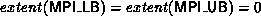
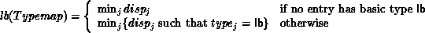
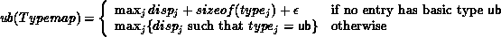
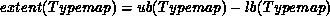

It is often convenient to define explicitly the lower bound and upper bound of a type map, and override the definition given on page Lower-bound and upper-bound markers . This allows one to define a datatype that has ``holes'' at its beginning or its end, or a datatype with entries that extend above the upper bound or below the lower bound. Examples of such usage are provided in Sec. Examples . Also, the user may want to overide the alignment rules that are used to compute upper bounds and extents. E.g., a C compiler may allow the user to overide default alignment rules for some of the structures within a program. The user has to specify explicitly the bounds of the datatypes that match these structures.
To achieve this, we add two additional ``pseudo-datatypes,'' MPI_LB and MPI_UB, that can be used, respectively, to mark the lower bound or the upper bound of a datatype. These pseudo-datatypes occupy no space ( ). They do not affect the size or count of a datatype, and do not affect the the content of a message created with this datatype. However, they do affect the definition of the extent of a datatype and, therefore, affect the outcome of a replication of this datatype by a datatype constructor.
Example
Let D = (-3, 0, 6); T = (MPI_LB, MPI_INT, MPI_UB),
and B = (1, 1, 1). Then a call to
MPI_TYPE_STRUCT(3, B, D, T, type1)
creates a new datatype that has an
extent of 9 (from -3 to 5, 5 included), and contains an integer at
displacement 0. This is the datatype defined by the sequence
{(lb, -3), (int, 0), (ub, 6)} .
If this type is replicated twice by a call to
MPI_TYPE_CONTIGUOUS(2, type1, type2) then the newly created
type can
be described by the sequence
{(lb, -3), (int, 0), (int,9), (ub, 15)} .
(An entry of type
ub
can be deleted if there is another entry of type ub with a higher
displacement; an entry of type lb can be deleted if there is another
entry of type lb with a lower displacement.)
In general, if

then the lower bound of Typemap is defined to be

Similarly, the upper bound of Typemap is defined to be

Then

If typei requires alignment to a byte address that is a multiple of ki,
then  is the least nonnegative increment needed to round
extent(Typemap) to the next multiple of
is the least nonnegative increment needed to round
extent(Typemap) to the next multiple of  .
.
The formal definitions given for the various datatype constructors apply now, with the amended definition of extent.
The two functions below can be used for finding the lower bound and the upper bound of a datatype.
MPI_TYPE_LB( datatype, displacement)
[ IN datatype] datatype (handle)
[ OUT displacement] displacement of lower bound from origin,
in bytes (integer)
int MPI_Type_lb(MPI_Datatype datatype, MPI_Aint* displacement)
MPI_TYPE_LB( DATATYPE, DISPLACEMENT, IERROR)
INTEGER DATATYPE, DISPLACEMENT, IERROR
MPI_TYPE_UB( datatype, displacement)
[ IN datatype] datatype (handle)
[ OUT displacement] displacement of upper bound from origin,
in bytes (integer)
int MPI_Type_ub(MPI_Datatype datatype, MPI_Aint* displacement)
MPI_TYPE_UB( DATATYPE, DISPLACEMENT, IERROR)
INTEGER DATATYPE, DISPLACEMENT, IERROR